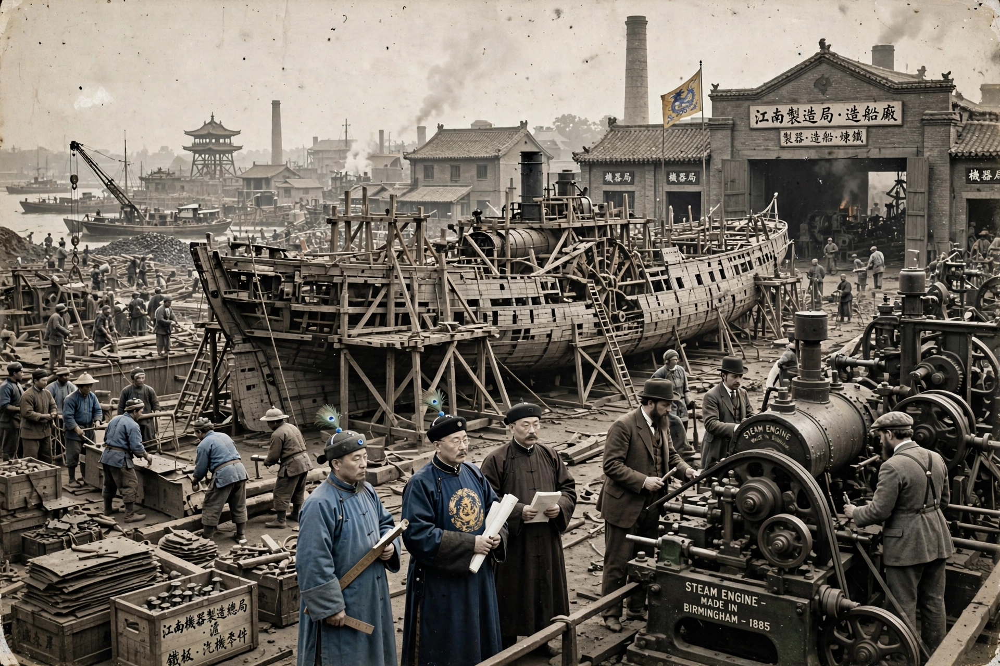

The Self-Strengthening Movement (c. 1861–1895), also known as the Westernisation or Yangwu Movement, was a period of institutional reforms in late Qing China after defeats in the Opium Wars and the Taiping Rebellion, aimed at modernising the military and industry while preserving Confucian order.

Prince Gong and officials such as Zeng Guofan founded the Zongli Yamen (foreign office) and arsenals at Jiangnan and Fuzhou, translation schools, and the Beiyang fleet.
Under Li Hongzhang, projects included China Merchants Steam Navigation Company, Kaiping Mines, telegraph lines and cotton mills, run as "official supervision, merchant operation". Students were sent to the United States and Europe.
Reform remained regional, underfunded and resisted by conservatives; corruption and lack of systemic political change left China vulnerable. Defeat in the First Sino-Japanese War (1894–95) is generally taken as the movement's failure and end, prompting deeper reform calls.